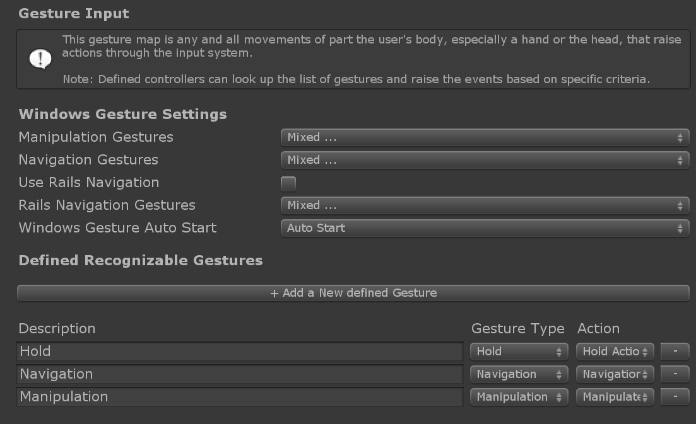

Gestures
手势(Gestures)是基于人手的输入事件。有两种类型的设备会在MRTK中引发手势输入事件(gesture input events)：
Windows Mixed Reality设备，例如HoloLens。这描述了捏合手指("Air Tap")和点击并按住的手势。
有关HoloLens手势的更多信息，请参见Windows Mixed Reality 手势文档.
WindowsMixedRealityDeviceManager包装了Unity XR.WSA.Input.GestureRecognizer来在Unity中激发来自HoloLens 设备的手势事件。触屏设备
UnityTouchController包装了支持物理触摸屏的 Unity Touch class类。
这两个输入源都使用 Gesture Settings profile 来将Unity的Touch和Gesture事件分别转换为MRTK的Input Actions。可以在 Input System Settings profile 下找到此配置文件。
Gesture Events
通过实现以下gesture handler接口之一来接收gesture events:
IMixedRealityGestureHandler 或者IMixedRealityGestureHandler<TYPE> (查看表event handlers).
有关gesture event handler的示例实现，请参见示例场景。
当实现通用版本时，OnGestureCompleted 和 OnGestureUpdated事件可以接收以下类型的类型化数据：
Vector2- 2D位置手势。由触摸屏产生，以通知其deltaPosition.Vector3-3D位置手势。由HoloLens产生，用于通知:cumulativeDelta用于一个 manipulation 事件normalizedOffset用于一个 navigation 事件
Quaternion- 3D旋转手势。可用于自定义输入源，但当前不由任何现有输入源产生。MixedRealityPose- 组合的3D位置/旋转手势。可用于自定义输入源，但当前不由任何现有输入源产生。
events 顺序
根据用户输入，有两个主要的事件链：
"Hold":
- Hold tap:
- 开始 Manipulation
- Hold tap 超过 HoldStartDuration:
- 开始 Hold
- Release tap:
- 完成 Hold
- 完成 Manipulation
- Hold tap:
"Move":
- Hold tap:
- 开始 Manipulation
- Hold tap 超过 HoldStartDuration:
- 开始 Hold
- Move hand 超过 NavigationStartThreshold:
- 取消 Hold
- 开始 Navigation
- Release tap:
- 完成 Manipulation
- 完成 Navigation
- Hold tap:
示例场景
HandInteractionGestureEventsExample场景在 MixedRealityToolkit.Examples\Demos\HandTracking\Scenes 显示了如何使用pointer Result在命中位置生成对象。
Gesture Tester script 是通过GameObjects可视化手势事件的示例实现。handler functions 会更改指示器对象的颜色，并在场景中的文本对象中显示最后记录的事件。